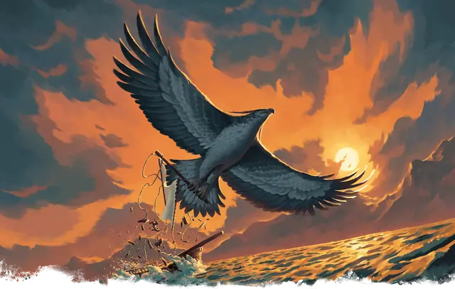

Рух
Roc
Громадное Чудовище, без мировоззрения

Класс Защиты 15 Инициатива +8 (18)
Хиты 248 (16к20 + 80)
Скорость 20 футов, Полёта 120 футов
| мод | спас | ||
|---|---|---|---|
| СИЛ | 28 | +9 | +9 |
| ЛОВ | 10 | +0 | +4 |
| ТЕЛ | 20 | +5 | +5 |
| мод | спас | ||
|---|---|---|---|
| ИНТ | 3 | −4 | −4 |
| МДР | 10 | +0 | +4 |
| ХАР | 9 | −1 | −1 |
Чувства пассивное Восприятие 18
Языки нет
Опасность 11 (7 200 опыта; БВ +4)
Действия
Мультиатака. Рух совершает две атаки Клювом. Она может заменить одну из этих атак на атаку Когтистыми лапами.
Клюв. Бросок рукопашной атаки: +13, досягаемость 10 фт. Попадание: 28 (3к12 + 9) Колющего урона.
Когтистые лапы. Бросок рукопашной атаки: +13, досягаемость 5 фт. Попадание: 23 (4к6 + 9) Рубящего урона. Если цель — существо Огромного размера или меньше, она Схвачена (Сл освобождения от захвата 19) обеими лапами; пока длится захват, цель также Опутана.
Бонусные действия
Пикирование (Перезарядка 5–6). Если рух удерживает существо Схваченным, она пролетает на расстояние вплоть до половины своей Скорости полёта, не Провоцируя атак, и роняет это существо.
Бонус мастерства +4
Среда обитания Арктика, Горы, Прибрежье, Пустыня, Холмы
Сокровища Любые
Рух
Птица невероятных размеров
Рухи, хищные птицы фантастических масштабов, охотятся над огромными территориями и способны унести в когтях целого слона, кита или повозку. Поймав добычу, они несут её в свои далёкие гнёзда — такие путешествия могут длиться днями и покрывать сотни миль.
Их гнёзда находятся среди удалённых от цивилизации пиков и обычно усеяны сокровищами и недоеденной добычей. Совершите бросок по таблице «Останки в гнезде рух» или определите сами содержимое гнезда рух.
Останки в гнезде рух
| к6 | Гнездо рух содержит… |
| 1 | Погребальные носилки потерянного героя. |
| 2 | Караванную повозку, полную торговых товаров. |
| 3 | Живого слона. |
| 4 | 1к4 яйца размером больше взрослого человека. |
| 5 | «Узника», заточённого в гнезде. |
| 6 | Статую рыцаря верхом на вздыбленном коне. |